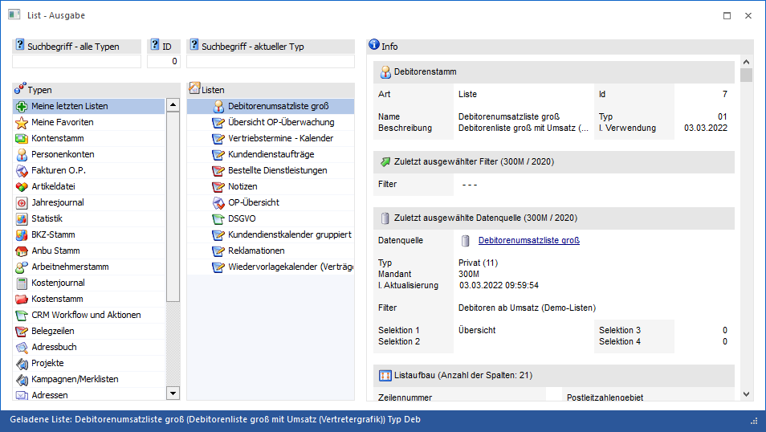
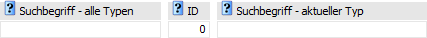
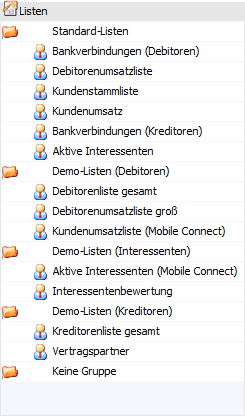
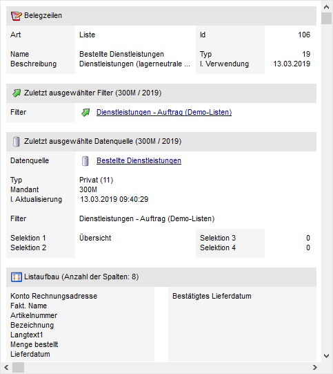
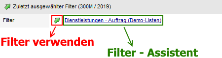
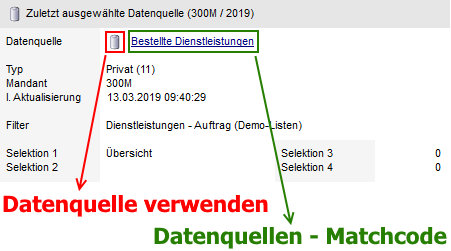
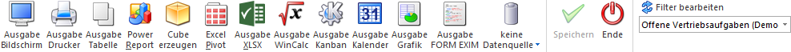

Über den Menüpunkt…
1 WinLine LIST
1 Liste
1 Drucken
… bzw. über den Menüpunkt…
1 WinLine INFO
1 CRM
1 Liste Drucken
… können bestehende Listen ausgegeben werden.
Hinweis
Wurde die Option "Variable Cockpitausgabe" in der LIST-Definition aktiviert, so wird das Fenster auch bei der Ausgabe einer Liste via Cockpit geöffnet (bezogen auf die gewählte Liste des Cockpits).

In der linken Tabelle stehen die unterschiedlichen Listtypen zur Verfügung. Nach Auswahl eines Typs werden die angelegten Listen in der rechten Tabelle angezeigt. Zusätzlich gibt es noch die folgenden Rubriken in der linken Tabelle:
ü 
In der Rubrik "Meine letzten Listen"
werden jene 11 Listen angezeigt, welche vom Benutzer zuletzt ausgegeben
wurden.
ü 
In der Rubrik "Meine Favoriten" werden die
eigenen Favoriten angezeigt. Die Favoriten werden mit Hilfe des Buttons "zu
Favoriten hinzufügen" im Programm List
- Assistent definiert.
Auf der rechten Seite des Fensters wird - sofern eine Liste ausgewählt wurde - die Information zur Liste angezeigt. Diese umfasst unter anderem auch die Anzahl der Spalten und welche Spalten in der Liste verwendet werden.
Das Fenster "List - Ausgabe" ist in die folgenden Bereiche untergliedert:
ü Bereich "Suche"
ü Tabelle "Typen"
ü Tabelle "Auswertungen"
ü Bereich "Info"
Bereich "Suche"

Ø Suchbegriff - alle Typen
An dieser Stelle kann durch Eingabe eines Suchbegriffs die Auswahl der Listen - unabhängig vom gewählten Typ - eingeschränkt werden. Die Suche erfolgt hierbei in den Felder "Name" und "Bezeichnung".
Ø ID
Mit Hilfe dieses Felds kann durch Eingabe und Bestätigen einer ID die Liste bzw. Gruppe direkt ausgewählt werden.
Ø Suchbegriff - aktueller Typen
An dieser Stelle kann durch Eingabe eines Suchbegriffs die Auswahl der Listen - abhängig vom gewählten Typ - eingeschränkt werden. Die Suche erfolgt hierbei in den Felder "Name" und "Bezeichnung".
Tabelle "Typen"

In der Tabelle werden entsprechenden der Programmberechtigungen alle List-Typen angezeigt. Durch Anwahl eines Typs wird die Tabelle "Listen" entsprechend gefüllt. Neben den List-Typen stehen noch folgende weitere Auswahlen zur Verfügung:
ü
In der Rubrik "Meine letzten Listen"
werden jene 11 Listen angezeigt, welche vom Benutzer zuletzt ausgegeben
wurden.
ü
In der Rubrik "Meine Favoriten" werden
die eigenen Favoriten angezeigt. Die Favoriten werden mit Hilfe des Buttons "zu
Favoriten hinzufügen" definiert.
Achtung
Wenn die List - Ausgabe in der Applikation WinLine INFO aufgerufen wird, dann stehen zusätzlich zu "Meine letzten Listen" und "Meine Favoriten" nur die Datenbereiche "CRM Workflow und Aktionen" und "Adressbuch" zur Verfügung.
Tabelle "Auswertungen"

In der Tabelle werden alle Listen, gemäß des zuvor gewählten Typs (siehe Tabelle "Typen"), angezeigt.
Bereich "Info"

Wird eine bestehende Liste bzw. Gruppe ausgewählt, so werden auf der rechten Seite des Fensters diverse Information (bezogen auf das Ausgangsobjekt) angezeigt.
ü Allgemeine Informationen
An
dieser Stelle werden allgemeine Information, bezogen auf die aktuelle Liste bzw.
Gruppe, angezeigt.
ü Zuletzt ausgewählter
Filter
Hier wird der zuletzt ausgewählte Filter der Liste (bezogen auf Liste
/ Benutzer / Mandant / Wirtschaftsjahr) ausgewiesen (ausgenommen sind Listen mit
der Objektberechtigung "lesen").
Durch Anwahl des Icons wird der zuletzt gewählte Filter
automatisch in den Ribbon unter "Filter bearbeiten" eingetragen und in der
weiteren Folge bei der Ausgabe (z.B. Bildschirm oder Drucker) verwendet. Wird
hingegen auf den Namen des Filters geklickt, so öffnet sich der "Filter -
Assistent".
Beispiel

ü Zuletzt ausgewählte
Datenquelle
An dieser Stelle wird die zuletzt ausgewählte Datenquelle
(bezogen auf Liste / Benutzer / Mandant / Wirtschaftsjahr) ausgewiesen.
Durch
Anwahl des Icons wird die zuletzt
gewählte Datenquelle automatisch geladen und in der weiteren Folge bei der
Ausgabe (z.B. als Cube oder Power Report) verwendet. Wird hingegen auf den Namen
der Datenquelle geklickt, so öffnet sich der "Datenquellen - Matchcode".
Beispiel

ü Listaufbau
Hier werden die
ersten 12 Variablen der Liste für die Ausgabe angezeigt.
Buttons

Ø Ausgabe Bildschirm
Mit Hilfe des Buttons "Ausgabe Bildschirm" wird die Liste am Bildschirm ausgegeben.
Ø Ausgabe Drucker
Durch Anwahl des Buttons "Ausgabe Drucker" wird die Liste am Drucker ausgegeben.
Ø Ausgabe Tabelle
Bei der Anwahl des Buttons "Ausgabe Tabelle" wird die gewählte Liste in Form einer WinLine Tabelle dargestellt (nähere Informationen entnehmen Sie bitte dem Kapitel List - Ausgabe in Tabelle).
Ø Power Report
Durch Drücken des Buttons "Power Report" wird die Liste auf Basis von Cube-Daten grafisch dargestellt. Die Ausgabe ist individuell anpassbar und erfolgt in der Form von "Widgets", die unterschiedlichste Darstellungen ermöglichen.
Ø Cube erzeugen
Wenn die Option "Cube erzeugen" gewählt wird (nur möglich, wenn auch die entsprechende Lizenz dafür vorhanden ist), dann wird die Liste im "Olap Viewer" angezeigt. In diesem können die Daten nach verschiedenen Gesichtspunkten ausgewertet werden.
Ø Excel Pivot
Durch Anwahl des Buttons "Excel Pivot" wird der Inhalt der Liste in Form einer Pivot Ausgabe in Microsoft Excel (2007 oder höher) angezeigt.
Ø Ausgabe XLSX
Mit Hilfe des Buttons "Ausgabe XLSX" wird der Inhalt der Liste an Microsoft Excel übergeben.
Ø Ausgabe WinCalc
Durch Anwahl dieses Buttons wird der Inhalt der Liste an das Tabellenkalkulationsprogramm "WinCalc" übergeben.
Ø Ausgabe Kanban
Durch Anwahl dieses Buttons kann der Inhalt von Stammdaten- bzw. CRM-Listen in Form eines Kanbans ausgegeben und bearbeitet werden (nähere Informationen entnehmen Sie bitte den Kapiteln "Stammdaten-Kanban" und "CRM-Kanban").
Ø Ausgabe Kalender
Bei Liste der Typen "03 - Fakturen O.P", "09 - Arbeitnehmerstamm", "16 - CRM Workflow", "17 - CRM Aktionen", "18 - CRM Workflow und Aktionen", "19 - Belegzeilen", "23 - Adressen", "27 - Zeitauswertung" und "28 - Belege" steht eine Ausgabe in Form eines Kalenders zur Verfügung (nähere Information entnehmen Sie bitte dem Kapitel "WinLine Kalender").
Ø Ausgabe Grafik
Mit Hilfe dieses Buttons wird die Liste in Form einer Grafik dargestellt.
Hinweis
Zur Darstellung einer Grafik müssen im List-Aufbau eine X- und eine Y-Achse definiert worden sein.
Ø Ausgabe FORM EXIM
Über diese Ausgabe können die Daten der WinLine LIST-Liste in eine WinLine FORM übertragen werden. Hierfür wird zunächst ein XLSX-Dokument innerhalb des Installationsverzeichnisses (im Pfad …\Cubes\XLSX\...) erzeugt (der entsprechende Dateiname bildet sich aus dem Listnamen und der Benutzernummer des angemeldeten WinLine-Benutzers).
Parallel dazu öffnet sich das Programm FORM-EXIM mit vorselektierter manueller Import-Variante (Treibertyp/Treiber EXCEL) und eingetragenem Verzeichnispfad im Bereich "Datenquelle", sodass dort nach Auswahl der gewünschten Definitionen im Bereich FORM ein Import der Werte in eine vorhandene FORM (inkl. passender Zuordnung) erfolgen kann.
Ø Datenquelle
Mit Hilfe dieser Auswahl kann definiert werden, ob und wie eine Datenquelle (d.h. ein Snapshot, eine View oder eine MasterView) verwendet werden soll.
ü Keine Datenquelle
Bei Auswahl
von "keine Datenquelle" wird keine zuvor angelegte Datenquelle genutzt. D.h. die
Daten werden von der WinLine "live" ermittelt und in der gewünschten Form
ausgegeben.
Hinweis
Da die BI-Ausgabe (z.B. Cube oder Power Report) immer eine Datenquelle benötigt, wird im Hintergrund eine temporäre Datenquelle (Snapshot) gebildet.
ü Datenquelle
erstellen/aktualisieren (Snapshot)
Die Daten werden zur Laufzeit ermittelt
und an einen zu definierenden Snapshot übergeben. Nach dem Füllen der
Datenquelle wird die gewünschte Ausgabevariante über die Datenquelle erzeugt.
Dieser Vorgang kann mit einer Zeitverzögerung verbunden sein, da die Daten
zusätzlich gespeichert werden müssen.
ü Datenquelle
erstellen/aktualisieren (View)
Im Gegensatz zum Arbeiten mit einem Snapshot
wird eine View, d.h. eine Sicht auf die gewünschten Daten, erzeugt. Eine View
liefert somit immer aktuelle Daten, was mit einem Zeitaufwand verbunden ist.
Hinweis
Bei dem Aktualisieren einer View wird nur die Sicht aktualisiert, z.B. mit neuen Selektionskriterien versehen.
ü Datenquelle verwenden
Bei der
Verwendung eines Snapshots werden die Daten direkt aus der Datenquelle gelesen,
d.h. die für die Ausgabe benötigten Daten können ohne Verzögerung in der
gewünschten Variante ausgegeben werden.
Wird hingegen eine View gewählt, so
werden die Daten für die Ausgabe "live" ermittelt. Gleiches gilt für die
MasterView, wobei hier die Daten so aktuell sind wie die zugrunde liegenden
Datenquellen.
Hinweis
Der Button "Datenquelle verwenden" steht nur zur Verfügung, wenn für diesen Bereich (bezogen auf den aktuellen Benutzer / Mandanten) zumindest eine private oder öffentliche Datenquelle existiert.
ü Datenquellenverwaltung
Es wird
das Programm "Datenquellenverwaltung" geöffnet und die Datenquelle(n) der Liste
angezeigt.
Hinweis
Weitere Informationen zum Thema "Datenquellen" entnehmen Sie bitte dem Kapitel "Die Datenquelle".
Ø Speichern
Dieser Button steht nur zur Verfügung, wenn eine Liste via Reportdefinition ausgewählt werden soll.
Ø Ende
Durch Drücken des Buttons "Ende" bzw. der Taste ESC wird das Fenster geschlossen.
Ø Filter bearbeiten
Durch Anklicken des Filter-Buttons wird zuerst automatisch ein Filter mit dem gleichen Namen der gerade bearbeiteten Liste erstellt, in welchem dann Einschränkungen für die Liste bzw. eine Sortierung für die Liste vorgenommen werden können. Zusätzlich können aber auch beliebig viele andere Filter angelegt werden.